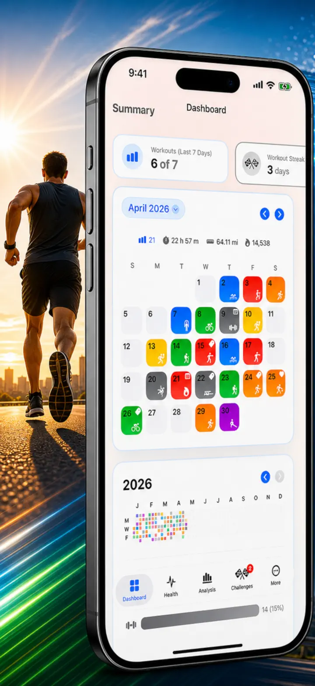
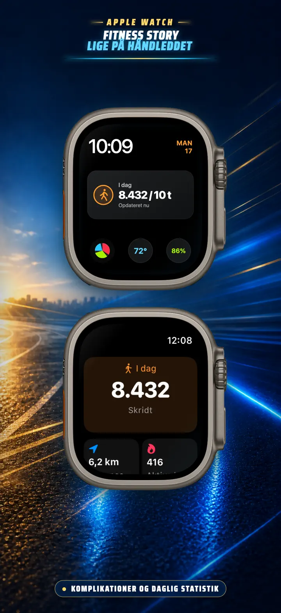
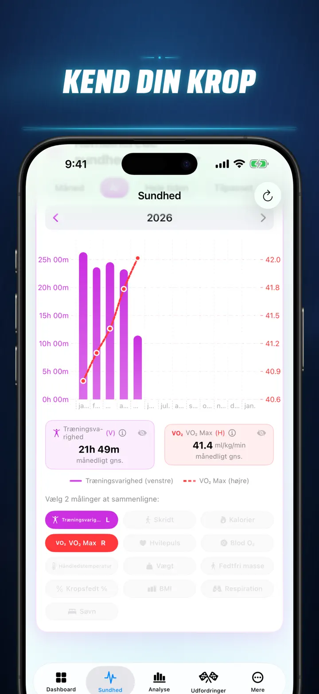
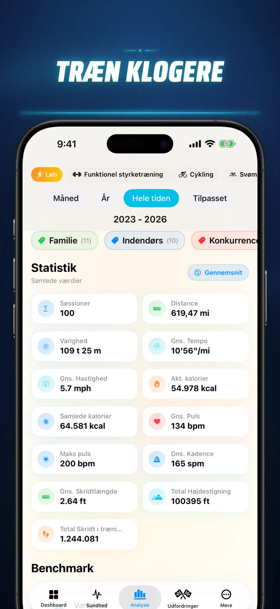
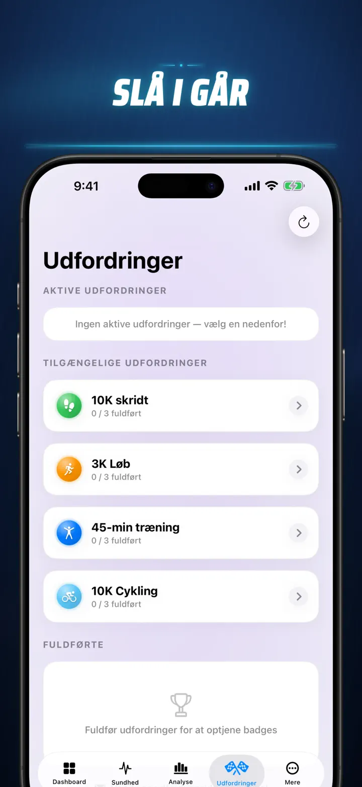
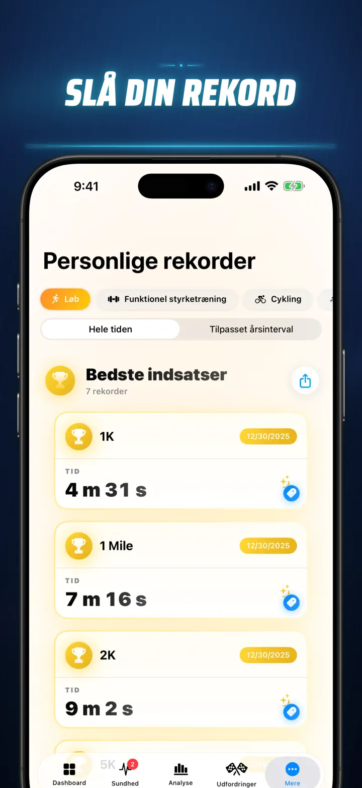
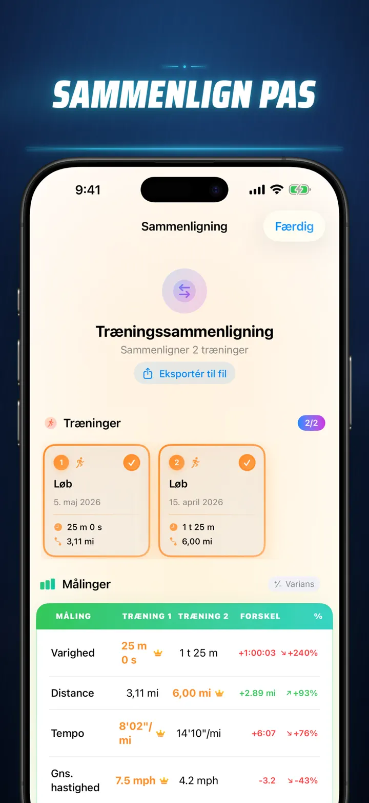
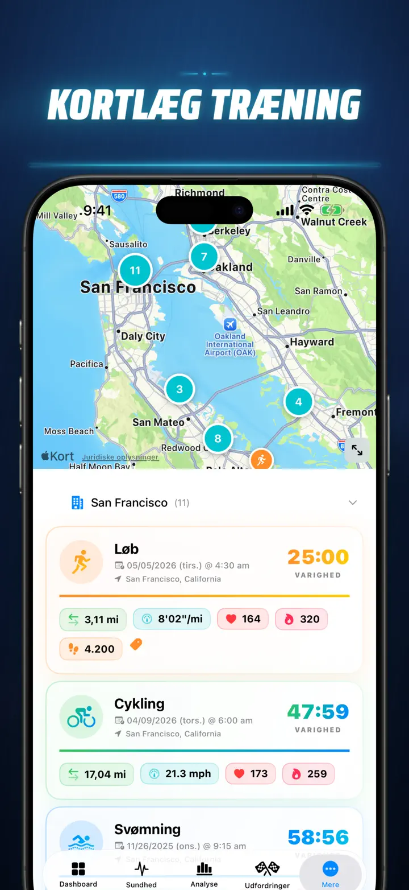
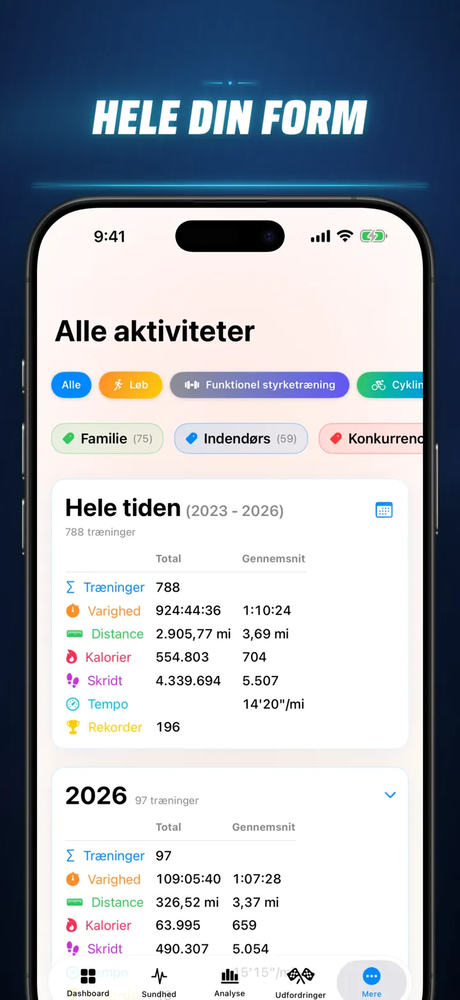

Fitness Story
Træningsdata og udfordringer
Nu på Apple Watch: dagens skridt på enhver urskive, plus en I dag-skærm med distance, kalorier og etager — direkte fra Apple Health.
Hent i App Store
Om appen
Stop med at gætte. Begynd at vide. Fitness Story forvandler dine Apple Health-data til en stærk, detaljeret analyse af hele din træningsrejse. Ingen konti. Ingen skjulte servere. Kun dine data, visualiseret på din enhed og i din private iCloud.
Uanset om du følger søvnfaser, analyserer løbekadence eller jagter en PR på maraton, får du et samlet dashboard til den indsats, du allerede lægger i træningen.
Fungerer med enhver enhed eller app, der synkroniserer til Apple Health — Apple Watch, Garmin, Polar, Suunto, Zwift og flere.
PROFESSIONEL ANALYSE
- Trend- og benchmarkgrafer: Se median, kvartiler og outliers for hver sportstype.
- Detaljerede filtre: Gennemgå historikken efter tidspunkt, distance, varighed, tempo, højdemeter, kadence og skridtlængde.
- Rangér alt: Sammenlign dagens distance, tempo, puls og andre målinger med hele din historik, og se straks om du ramte en Top 15 %-præstation.
- Bidragsgraf: En GitHub-inspireret heatmap over alle dine træningsdage med detaljer, når du vender grafen.
TRÆNINGSDETALJER PÅ NYT NIVEAU
- Smarte kort: Farvekod udendørs ruter efter hastighed, højde eller pulszoner. Inkluderer korrektion for kort i Kina.
- Dyb splitanalyse: Se kilometer- eller mile-splits med tempo, højde, puls og kadence for hver omgang.
- Pulszoner: Visualisér tid i personlige zoner 1-5 baseret på alder og hvilepuls.
- Mere kontekst: Tilføj fotos, formaterede noter, indsatsvurdering fra 1-10 og egne tags til hver træning.
DIT SUNDHEDSCENTER
- Alt, hvad Apple Watch måler, samlet med daglige, ugentlige og årlige trends.
- Kondition og hjerte: Hvilepuls, VO2 Max, ilt i blodet og vejrtrækningsfrekvens.
- Kropsdata: Vægt, fedtprocent, lean body mass og BMI med trendindikatorer.
- Aktivitet og restitution: Skridt time for time, aktive og basale kalorier samt afvigelser i håndledstemperatur.
- Avanceret søvn: Dyb, core, REM og vågen tid visualiseret nat for nat.
- Korrelationer: Læg sundhedsmålinger oven på hinanden og se, hvordan søvn, vægt og træning påvirker puls og VO2 Max.
SAMMENLIGN OG KONKURRÉR
- Vælg op til 10 træningspas og sammenlign dem side om side, split for split.
- Eksportér sammenligninger til videre analyse.
- Følg personlige rekorder for 1K, 5K, 10K, halvmaraton, maraton og egne distancer.
- Se en kronologisk story-tidslinje med milepæle, rekorder og afsluttede træninger.
DINE DATA, OVERALT
- Globalt kort: Se alle steder, du har trænet, på et interaktivt verdenskort.
- Kraftig eksport: Gem hele historikken eller udvalgte perioder som CSV eller JSON med splits, kropsdata og metadata.
- iCloud-synk: Favoritter, tags, noter og vurderinger følger dig på tværs af enheder.
- Privatliv først: Dine data bliver hos dig.
Din sved fortæller en historie. Nu er det tid til at læse den. Download Fitness Story i dag.
Privacy Policy: https://masawata.net/privacy-policy.html Terms Of Service: https://www.apple.com/legal/internet-services/itunes/dev/stdeula/
Skærmbilleder








Fitness Story
Nu på Apple Watch: dagens skridt på enhver urskive, plus en I dag-skærm med distance, kalorier og etager — direkte fra Apple Health.
Hent i App Store